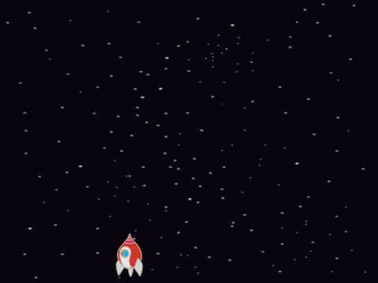
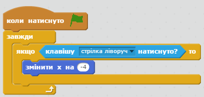
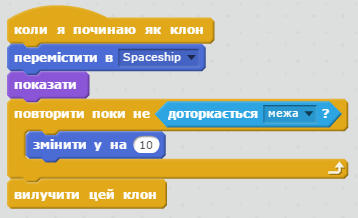
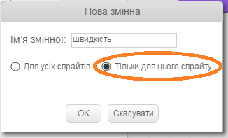

У цьому проекті ви створите гру, в якій потрібно врятувати Землю від космічних монстрів.
Крок 1: Створення космічного корабля
Зробимо корабель, який захищатиме Землю!
Завдання для виконання
Створіть новий проект у Скретч та видаліть спрайт кота, так щоб проект став пустим.
Додайте фон 'stars' (зірки) і спрайт 'Spaceship' (космічний корабель) до вашого проекту. Зменшіть корабель та пересуньте його до низу екрану.

screenshot
Додайте код для переміщення вашого корабля вліво, при натисканні відповідної клавіші зі стрілкою вліво. Вам потрібно буде використовувати такі блоки:

screenshot
Додайте схожий код для переміщення корабля вправо, при натисканні клавіші зі стрілкою вправо.
Протестуйте проект. Чи вдається вам керувати космічним кораблем за допомогою кнопок зі стрілками "вліво" і "вправо"?
Збережіть свій проект
Крок 2: Блискавки
Додамо нашому космічному кораблю здатність стріляти блискавками!
Завдання для виконання
Додайте спрайт "Lightning" (блискавка) з бібліотеки скретч. Перейдіть в костюми і переверніть блискавку догори ногами. Так, щоб вона била в астероїди, а не в Землю.
screenshot
Додайте наступний код до спрайту корабля для запуску нової блискавки, кожен раз, коли натиснута кнопка "пробіл".
screenshot
Тепер, коли створено клон об'єкта "блискавка", вона повинна з'явитися в тій позиції, де зараз знаходиться корабель і летіти вгору сцени. Додайте наступний код для спрайту блискавки:

screenshot
Примітка: Ми створюємо новий клон блискавки і переносимо його в позицію корабля до того, як показуємо цей клон на екрані. Таким чином, ми уникнемо миготіння блискавки в різних частинах екрану.
Протестуйте свою блискавку натиснувши на пробіл.
Виклик: Виправлення неполадок
Що трапиться якщо затримаєте пробіл натиснутим? Чи можете ви використати чекати, щоб виправити ситуацію?
Збережіть свій проект
Крок 3: Літаючі Космічні бегемоти
Додамо безліч літаючих бегемотів, які намагаються знищити ваш корабель.
Завдання для виконання
Створіть новий спрайт з зображенням 'Hippo1' з бібліотеки Scratch.
screenshot
Зробіть так, щоб він обертався тільки зліва направо, і додайте наступний код, щоб приховати спрайт, коли гра починається:
screenshot
Створіть нову змінну з назвою speed, тільки для спрайту з бегемотом.

screenshot
Зрозуміти, що ви зробили це правильно можна так: біля назви змінної з'явиться ім'я спрайту:
screenshot
Наступний код буде створювати нового Бегемота кожні кілька секунд. Сцена є найкращим місцем для цього коду: